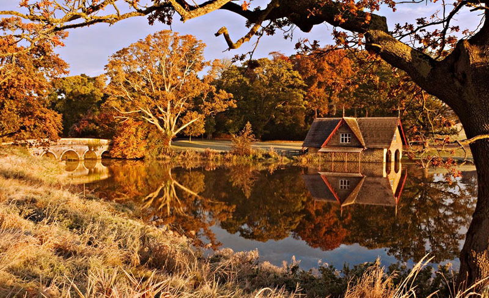

Composition | Framing
The world is full of objects which make perfect natural frames, such as trees, archways and holes. By placing these around the edge of the composition you help to isolate the main subject from the outside world. The result is a more focused image which draws your eye naturally to the main point of interest.
Frames don’t have to be man-made objects such as arches or windows. The photo below was taken in County Kildare in Ireland. This time, I used the tree trunk to the right and the overhanging branch to create a frame around the scene containing the bridge and boat house. Notice that even though the ‘frame’ doesn’t actually surround the whole scene in this case, it still adds a sense of depth.
Including a ‘frame withing the frame’ is another effective way of portraying depth in a scene. Look for elements such as windows, arches or overhanging branches to frame the scene with. The ‘frame’ does not necessarily have to surround the entire scene to be effective. Using a ‘frame within a frame’ presents a great opportunity to use your surroundings to be creative in your compositions.